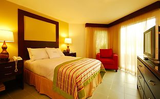
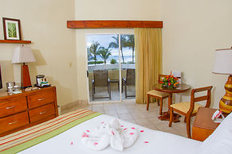
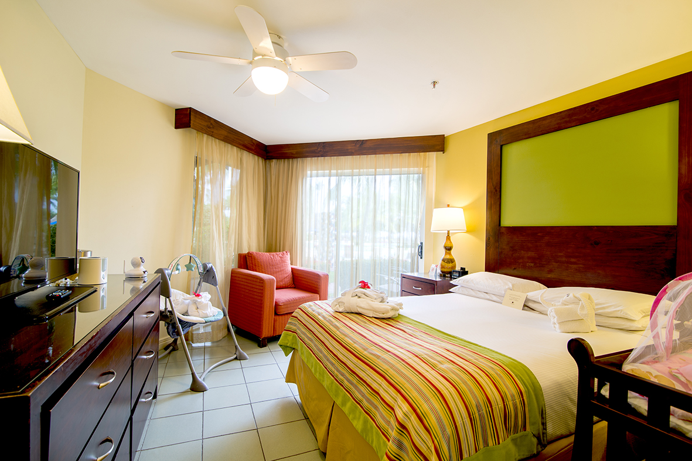

Habitación Estándar
Situadas alrededor de nuestra piscina para adultos, las habitaciones estándar le permiten disfrutar de vistas a los jardines y cercanía al lobby de nuestro resort. Elija entre una cama king o dos camas dobles.
Cuenta con dos camas, baño con bañera y regadera portátil, Tv, servicio de internet, plancha de ropa, y cafetera.

Junior Suites
Cercanas a todas las comodidades, nuestras suites con dormitorio privado cuentan con un dormitorio principal con una cama Queen y una sala de estar con sofá cama, cada área cuenta con televisión por cable, ideales para una familia.
Cuenta con vista a los jardínes y a la piscina principal.

Suites Familiares
Suites Familiares para permitirles disfrutar aún más de nuestras instalaciones.
Al elegir la opción de la Suite Familiar usted recibirá una serie de comodidades y servicios especiales incluidos con su estadía.
La habitación cuenta con Encierro infantil Play y cuna con colchón impermeable, Columpio con temporizador y control de velocidadCoche de tres ruedas para caminar y correr, Mesa con colchón para el cambio de pañales, Esterilizador eléctrico para biberones u otros artículos de bebé y Calentador para biberones.
Y como beneficios exclusivos cuenta con Corcierge familiar que le asistirá durante su visita, Check-in privado, Zona exclusiva de parqueo, Mini nevera con jugos y snacks, Habitación con acceso directo a la piscina infantil, Moderno y cómodo sofá cama, Tina de baño, 2 TV de pantalla plana, Amplia selección de películas infantiles, Acceso directo a nuestro nuevo y moderno club Kidz Paradise, Acceso preferencial a nuestro restaurante buffet familiar.
